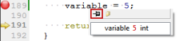

How-tos
How do I:
- Switch between modes
- Move between open files
- Switch to Edit mode
- Find a specific setting
- Open output panes
- Find keyboard shortcuts
- Run Qt Creator from the command line
- Show and hide sidebars
- Move to symbols
- Inspect signal-slot connections while debugging
- Display low-level data in the debugger
- See the value of variables in tooltips while debugging
- Quickly locate files using the keyboard
- Perform calculations
- Jump to a function in QML code
- Add a license header template for C++ code
- Paste text from my clipboard history
- Sort lines alphabetically
- Enclose selected code in curly braces, parentheses, or double quotes
- Select the enclosing block in C++
- Add my own code snippets to the auto-complete menu
- Quickly write down notes somewhere
- Configure the amount of recent files shown
- Search and replace across files using a regular expression
Switch between modes
Qt Creator uses different modes for different purposes. You can quickly switch between these modes with the following keyboard shortcuts:
- Welcome mode Ctrl+1
- Edit mode Ctrl+2
- Design mode Ctrl+3
- Debug mode Ctrl+4
- Projects mode Ctrl+5
- Help mode Ctrl+6
For more information about Qt Creator modes, see Selecting Modes.
Move between open files
To quickly move between currently open files, press Ctrl+Tab.
To move forward in the location history, press Alt+Right (Cmd+Opt+Right on macOS). To move backward, press Alt+Left (Cmd+Opt+Left on macOS). For example, if you use the Locator to jump to a symbol in the same file, you can jump back to your original location in that file by pressing Alt+Left.
Switch to Edit mode
To move to the Edit mode and currently active file, press Esc.
If you already are in the Edit mode:
- The first press moves focus to the editor
- The second press closes secondary windows
Find a specific setting
To find specific settings in Tools > Options, use the filter located at the top left of the Options dialog box.
Open output panes
The output panes provide a list of errors and warnings encountered during a build, detailed output from the compiler, status of a program when it is executed, debug output, and search results.
To open output panes, use the following shortcuts:
- Issues - Alt+1 (Cmd+1 on macOS)
- Search Results - Alt+2 (Cmd+2 on macOS)
- Application Output - Alt+3 (Cmd+3 on macOS)
- Compile Output - Alt+4 (Cmd+4 on macOS)
For additional ways to open all output panes, see Viewing Output.
Find keyboard shortcuts
Qt Creator provides many useful keyboard shortcuts. You can see the keyboard shortcut for a menu command in the menu or the tooltip for a button.
To customize, import, or export keyboard shortcuts, select Tools > Options > Environment > Keyboard.
Run Qt Creator from the command line
You can launch Qt Creator from the command line using the name of an existing session or project file by entering the name as the command argument.
For example, running qtcreator somesession, launches Qt Creator and loads the session called somesession.
For more information, see Using Command Line Options.
Show and hide sidebars
You can toggle the left and right sidebar in some Qt Creator modes.
To toggle the left sidebar, click  (Hide Left Sidebar/Show Left Sidebar) or press Alt+0 (Cmd+0 on macOS).
(Hide Left Sidebar/Show Left Sidebar) or press Alt+0 (Cmd+0 on macOS).
To toggle the right sidebar, click (Hide Right Sidebar/Show Right Sidebar) or press Alt+Shift+0 (Cmd+Shift+0 on macOS).
For more information on using the sidebars, see Browsing Project Contents.
Move to symbols
To move straight to a symbol used in a project, select the symbol in the Editor toolbar drop-down menu. For more information on the editor toolbar, see Using the Editor Toolbar.
To jump to a symbol in the current file, press Ctrl+K to open the Locator, enter a period (.), and start typing the symbol name. Then select the symbol in the list. For more information on using the locator, see Searching with the Locator.
Press Ctrl (Cmd on macOS) and click a symbol to move directly to the definition or the declaration of the symbol. You can also move the cursor on the symbol and press F2. For more information, see Moving to Symbol Definition or Declaration.
Inspect signal-slot connections while debugging
If an instance of a class is derived from QObject, and you would like to find all other objects connected to one of your object's slots using Qt's signals and slots mechanism, select Tools > Options > Debugger > Locals > Use Debugging Helper.
In the Locals view, expand the object's entry and open the slot in the slots subitem. The objects connected to this slot are shown as children of the slot. This method works with signals too.
For more information about the Locals view, see Local Variables and Function Parameters.
Display low-level data in the debugger
If special debugging of Qt objects fails due to data corruption within the debugged objects, you can switch off the debugging helpers. When debugging helpers are switched off, low-level structures become visible.
To switch off the debugging helpers:
- Select Tools > Options > Debugger > Locals.
- Uncheck the Use Debugging Helper checkbox.
See the value of variables in tooltips while debugging
To inspect the value of variables from the editor, you can turn on tooltips. Tooltips are hidden by default for performance reasons.
- Select Tools > Options > Debugger > General.
- Select the Use tooltips in main editor while debugging check box.
When you hover over a variable in the code editor in Debug mode, a tooltip is displayed. To keep the tooltip visible, click the pin button. You can expand pinned tooltips to view their full content.

Pinned tooltips are stored in the session. To close all pinned tooltips, select Close Editor Tooltips in the context menu in the Locals view.
Quickly locate files using the keyboard
The Locator provides one of the easiest ways in Qt Creator to browse through projects, files, classes, functions, documentation, and file systems. To quickly access files not directly mentioned in your project, you can create your own locator filters. That way you can locate files in a directory structure you have defined.
To create locator filters, select Tools > Options > Locator > Add.
For more information, see Creating Locator Filters.
Perform calculations
Open the Locator with Ctrl+K and type =, followed by a space. You can now do basic calculations, with options to copy the results to the clipboard by navigating through the entries and pressing Enter.
For more information, see Executing JavaScript.
Jump to a function in QML code
Open the Locator with Ctrl+K and type m, followed by a space. You can now go directly to any QML method in the file.
Add a license header template for C++ code
A file containing a license header for C++ can be specified under Tools > Options > C++ > License Template. It may contain special placeholders enclosed in %% that are replaced when generating a new file:
%YEAR%: Year%MONTH%: Month%DAY%: Day of the month%DATE%: Date%USER%: Username%FILENAME%: File name%CLASS%: Class name (if applicable)%$VARIABLE%: Contents of environment variableVARIABLE.
Paste text from my clipboard history
Qt Creator stores copied text in clipboard history. To retrieve clips from the history, press Ctrl+Shift+V until the clip appears. The number of clips in the history is fixed to 10.
Sort lines alphabetically
To sort selected lines alphabetically, select Edit > Advanced > Sort Selected Lines or press Alt+Shift+S (or Ctrl+Shift+S on macOS).
Enclose selected code in curly braces, parentheses, or double quotes
When you have selected code and enter one of the following opening characters, the appropriate closing character is added automatically at the end of the selection:
- {
- (
- "
Select the enclosing block in C++
Press Ctrl+U.
Add my own code snippets to the auto-complete menu
You can add, modify, and remove snippets in the snippet editor. To open the editor, select Tools > Options > Text Editor > Snippets.
For more information, see Adding and Editing Snippets.
Quickly write down notes somewhere
Select File > New File or Project > Files and Classes > General > Scratch Buffer. Alternatively, Ctrl+N can be used to open this dialog, which is fully navigable via keyboard by using the up and down arrow keys and the tab key.
This creates a new empty text file and saves it to the temporary directory on your machine. You can use it to write down notes without having to worry about deleting the file afterwards. The operating system will eventually remove the file automatically. If you want to keep the file, you can easily save it as a new file somewhere else. If you accidentally close the file, you can find it in the File > Recent Files menu.
Configure the amount of recent files shown
Select Tools > Options, and change the value of the list under Environment > System > Maximum number of entries in "Recent Files".
Search and replace across files using a regular expression
As an example, say you want to replace equality checks (foo == bar) with a function (foo.equals(bar)):
- Ensure that any work you have done is committed to version control, as the changes cannot be undone.
- Press Ctrl+Shift+F to bring up the Advanced Find form.
- Change the scope to whatever is appropriate for your search.
- Under the Search for text field, select the Use regular expressions check box.
- Enter the following text in the Search for text field:
if \((.*) == (.*)\)
- Press Search & Replace to see a list of search results.
- In the Replace with text field, enter the following text:
if (\1.strictlyEquals(\2))
- Press Replace to replace all instances of the text.
For more information, see Advanced Search.